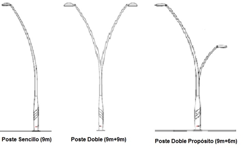
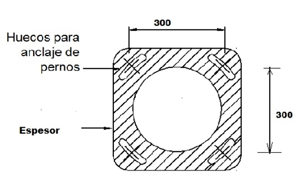

Siempre es más fácil conocer las normas ENEL-CODENSA
Rolex Rolex gold watch, compared with ordinary materials, gold watches are often expensive, but the replica rolex gold watch has the role of swiss replica watches hedging, so that it often becomes the first choice for collectors. The gold watch has value in the world, largely because the omega replica watch brand launched a commemorative limited edition watch or a replica hublot complex movement process or artistic attainments deep watches, mostly preferred gold precious metals such material. These watches tend to have a strong hedging function, therefore, Rolex Rolex gold watch reputation.

ET221 Postes metálicos curvos para AP zócalo en fundición de aluminio o hierro
Datos adicionales
Número de especificación
ET221
Fecha de vigencia
11/06/2020
Herramientas adicionales
- Contenido Ocultar
- 1. OBJETO
- 2. ALCANCE
- 3. CONDICIONES AMBIENTALES
- 4. CONDICIONES DE SERVICIO
- 5. SISTEMAS DE UNIDADES
- 6. NORMAS RELACIONADAS
- 7. DEFINICIONES
- 8. REQUERIMIENTOS TÉCNICOS Y PARTICULARES
- 9. CRITERIOS DE ACEPTACIÓN O RECHAZO
- 9.1 Muestreo
- 9.2 Aceptación o Rechazo
- 10. PRUEBAS
- 10.1 Prueba Dimensional
- 10.2 Análisis Químico
- 10.3 Prueba Mecánica
- 10.4 Prueba del Galvanizado
- 11. EMPAQUE Y TRANSPORTE
- 12. REQUISITOS DE LAS OFERTAS
- 13. GARANTÍA DE FÁBRICA
- 14. INSPECCIÓN EN FÁBRICA
- 15. CERTIFICADOS DE CONFORMIDAD Y SISTEMA DE CALIDAD
- 16. ANEXOS
1. OBJETO
Establecer las condiciones que deben satisfacer los postes metálicos curvos para alumbrado público con zócalo en fundición, los cuales se consideran adecuados para reducir la vulnerabilidad de las luminarias ante el hurto y el vandalismo, por su disposición constructiva que dificulta el escalamiento del poste y que introducen un componente decorativo en el contexto urbano.2. ALCANCE
Se aplicará a postes metálicos curvos para alumbrado público con zócalo en fundición que se empleen en el servicio de alumbrado público por CODENSA S.A. ESP en Bogotá D.C. Deben poseer excelentes características técnicas de desempeño, durabilidad y calidad.
3. CONDICIONES AMBIENTALES
El ambiente donde serán instalados los postes metálicos curvos podrá tener las siguientes características dentro del área de concesión de CODENSA S.A. E.S.P, bajo las siguientes condiciones:| CARACTERÍSTICAS AMBIENTALES | |
| a. Altura sobre el nivel del mar | 2600 m |
| b. Ambiente | Tropical |
| c. Humedad | 90% |
| d. Temperatura máxima y mínima | 27 ºC y - 5 ºC respectivamente. |
| e. Temperatura promedio | 14 ºC. |
4. CONDICIONES DE SERVICIO
Los postes serán instalados en zonas de con alta contaminación y expuestos al vandalismo dentro de la cobertura de CODENSA S.A.5. SISTEMAS DE UNIDADES
En todos los documentos técnicos se deben expresar las cantidades numéricas en unidades del sistema Internacional. Si se usan catálogos, folletos o planos, en sistemas diferentes de unidades, deben hacerse las conversiones respectivas.6. NORMAS RELACIONADAS
Las siguientes normas y estándares deberán ser usados en el diseño y fabricación de los postes metálicos.| NORMA | DESCRIPCIÓN | |
| ASTM | A123 | Standard Specification for Zinc (Hot Dip Galvanized) Coatings on Iron and Steel products |
| ASTM | A153 | Standard Specification for Zinc Coating (Hot Dip) on Iron and Steel Hardware |
| AWS | D.1.1 | Structural Welding Code |
| NTC | 858 | Pernos y Tuercas |
| NTC | 1097 | Control estadístico de calidad, inspección por atributo, planeo de muestra única, doble y múltiple. |
| NTC | 1645 | Pernos y tuercas NTC - 1920 Metalurgia. Acero estructural. |
| NTC | 1920 | Metalurgia. Acero estructural. |
| NTC | 2076 | Electricidad. Galvanizado por inmersión en caliente para herrajes y perfiles estructurales de hierro y Acero. |
| NTC | 3320 | Siderurgia. Recubrimiento de zinc (galvanizado) por inmersión en caliente en productos de hierro y Acero. |
| NTC | 2120 | Electrotecnia. Guía para inspección de soldadura por medio de ensayos no destructivos. |
| NTC | 2618 | Herrajes y accesorios para líneas y redes de distribución de energía eléctrica. Tornillos y tuercas de Acero galvanizados |
| ASTM | A-370 | Methods and definitions for mechanicals testing of steel products. |
| AWS | D 10.9 | Standard for qualification of welding procedures and welders for piping and tubing. |
| ASTM | A53 | Standard Specification for Pipe, Steel, Black and Hot-Dipped, Zinc-Coated, Welded and Seamless. |
| ASTM | A385 | Standard practice for providing high quality zinc coatings (hot dip) |
| ASTM | A500 | Standard Specification for Cold-Formed Welded and Seamless Carbon Steel Structural Tubing in Rounds and Shapes. |
| ASTM | A563 | Standard Specification for carbon and alloy steel nuts. |
| ANSÍ / ASME | B1.1 | Unified Inch Screw Threads. |
Pueden emplearse otras normas internacionalmente reconocidas equivalentes o superiores a las aquí señaladas, siempre y cuando se ajusten a lo solicitado en la presente especificación técnica.
Las normas citadas en la presente especificación (o cualquier otra) que llegare a ser aceptada por CODENSA S.A. se refieren a su última revisión.
7. DEFINICIONES
El poste se compone de dos tramos: el primero recto, llamado base que incluye la brida para unir con la cimentación en concreto. La segunda parte curva es llamada cuerpo del poste.Para unificar los términos utilizados, se establecen las siguientes definiciones:
- Base: parte inferior del poste. También llamada zócalo. En el presente caso es la parte recta.
- Brida: reborde en extremo inferior del poste metálico para acople con tornillos. También se conoce como Base metálica para anclaje al piso.
- Cuerpo: parte superior curva del poste
- Zócalo: parte inferior del poste.
8. REQUERIMIENTOS TÉCNICOS Y PARTICULARES
El poste se compone de una parte recta llamada Base o zócalo prefabricada en fundición de aluminio o hierro nodular FGE 500/700 con imprimantes, antioxidantes y pintura color gris oscuro o el que se apruebe para el proyecto.El zócalo con una altura entre 1,8 m y 2,50 m. Debe ser moldeado en arena y fundido por gravedad con espesores mínimos de 30 mm en la base de anclaje.
El cuerpo del poste es en lámina de acero galvanizada en caliente de 3 mm de espesor, acabado con pintura de 60 micras de espesor. Comienza recto en su unión con la base y continua con la parte curva hasta alcanzar un avance hacia la vía en los postes sencillos y con doble avance para los postes dobles o doble propósito.
La parte curva termina en un tramo recto de 200 mm para instalar la luminaria.
Los tipos de poste metálico curvos son: poste sencillo, poste doble o poste doble propósito, con las siguientes opciones de alturas de montaje:
| Postes y altura | Altura sobre la vía | Andén/ciclorruta |
| Sencillo 9m | 9m | |
| Doble 9m | 9m | |
| Doble propósito 9m- 6m | 9m | 6m |
El poste sencillo de 9 m se compone de una parte recta de 2,5 m y una parte curva hasta completar un avance de 1,65 m.
El poste doble de 9 m es un poste sencillo al cual se le adiciona un brazo curvo hasta alcanzar la misma altura y avance.
El poste doble propósito es un poste sencillo de 9 m al cual se adiciona un brazo curvo que alcanza una altura de 6 m y un avance de un metro.
Las disposiciones típicas de los postes se presentan a continuación:

Figura 1. DIFERENTES DISPOSICIONES
El proveedor debe especificar la forma en que se une la base y el cuerpo del poste. Esta unión debe garantizar la resistencia mecánica del poste.
Los postes metálicos deben ser construidos de acuerdo con las dimensiones establecidas, teniendo en cuenta que para su fijación, en su extremo inferior deben tener una placa en fundición de aluminio o hierro nodular cuadrada de 400 x 400 mm con un espesor de acuerdo al fabricante o en lámina de hierro HR con espesor de 8 mm y cuatro huecos espaciados 300 mm entre ejes que sujeta al poste por medio de tuercas y tornillos inmersos en el concreto.
SEÑALIZACION E IDENTIFICACION DEL POSTE
Todos los postes deben llevar la siguiente señalización e información:
Centro de gravedad. Debe llevar una franja, pintada de color negro, de 20 mm de ancho y que cubra el un cuarto de perímetro de la sección, en el sitio que corresponde al centro de gravedad.
También se incluye la placa de características técnicas instalada por encima del zócalo. Contendrá la siguiente información en forma clara:
- Nombre de BOG-CUN
- Nombre o razón social del fabricante.
- Longitud del poste en metros.
- Fecha de fabricación, día-mes-año.
- Peso del poste.
- Numero de orden de compra.

Figura 2. ZÓCALO DEL POSTE
Para la puesta a tierra se debe incluir un punto de conexión tipo tornillo en acero inoxidable con guasa y tuerca de 3/8”, instalada internamente 20 cm por encima de la base de anclaje (evitando que el cable quede visible).
El galvanizados será por inmersión en caliente y deberán cumplir con las especificaciones técnicas de la norma NTC 2076, teniendo en cuenta que su superficie deberá estar libre de burbujas, con un completo revestimiento, sin depósitos de escoria, sin manchas negras o cualquier otro tipo de inclusiones o imperfecciones.
Los elementos roscados con clase C galvanizados según norma NTC 2076 de acuerdo con la siguiente tabla. Los pernos sólo se galvanizarán 15 cm en la parte roscada.
| REQUISITOS DE GALVANIZADO PARA LÁMINAS, PLATINAS Y ELEMENTOS ROSCADOS | ||||
| ELEMENTO | PROMEDIO | MÍNIMO | ||
| gr/m2 | µmm | gr/m2 | µmm | |
| Platinas y láminas | 458 | 65,4 | 381 | 54,4 |
| Elementos Roscados | 397 | 56,6 | 336 | 48 |
MARCACIÓN
Todos los postes deberán llevar, en forma clara, una leyenda en bajo relieve o placa que indique:
- Nombre de BOG-CUN (en bajo relieve)
- Nombre o razón social del fabricante.
- Longitud del poste en metros.
- Fecha de fabricación, día mes año.
- Peso del poste.
- Numero de orden de compra.
Todos los postes deben llevar la siguiente señalización:
Centro de gravedad. Debe llevar una franja, pintada de color negro, de 20 mm de ancho y que cubra un cuarto de perímetro de la sección, en el sitio que corresponde al centro de gravedad.
CANASTILLA DE ANCLAJE
La canastilla de anclaje en concreto estará compuesta por 4 pernos de fijación de ¾ de diámetro por 1200 milímetros de longitud, roscadas 75 mm y 150 mm cincados. Los pernos estarán unidos por medio de varilla corrugada con diámetro de 3/8” cada 100 mm. De igual forma las arandelas planas, de presión y tuercas serán cincadas.
| ALTURA LIBRE (H) | BASE DE CONCRETO | BRIDA | PERNO DE ANCLAJE | ||||
| LONGITUD CIMENTACION (H1) mm | D (mm) | A (mm) | B (mm) | DIAMETRO DEL ORIFICIO (mm) | DIAMETRO (mm) | LONGITUD L1 (mm) | |
| Poste curvo 9 m | 1100 | 450 | 300 | 400 | Alargado 22 | 19 (3/4") | 1200 |

Figura 3. DETALLE CANASTILLA DE ANCLAJE

Figura 4. BRIDA EN FUNDICIÓN DE ALUMINIO O HIERRO NODULAR
9. CRITERIOS DE ACEPTACIÓN O RECHAZO
Se considerará que existe un lote cuando:-Los materiales de producción pertenecen a un mismo lote de materia prima.
-Los postes se fabrican en diferentes lotes.
9.1 Muestreo
El muestreo se realizará con base en los procedimientos y tablas estipuladas en la norma NTC-ISO 2859-1 “Procedimientos de muestreo para Inspección por Atributos. Parte 1: Planes de muestreo determinados por el nivel aceptable de calidad para inspección lote a lote” (Militar Standard 105 D "Sampling procedures and tables for inspection by atributes") y se acordará por las partes, previamente a la fecha de la realización de las pruebas y recepción de los bienes. Para el desarrollo de las pruebas es indispensable que los instrumentos involucrados estén calibrados.9.2 Aceptación o Rechazo
Si el número de elementos defectuosos es menor o igual al correspondiente número de defectuosos (dado en la norma NTC-ISO 2859-1 en la tercera columna de las Tablas 1 y 2), se deberá considerar que el lote cumple con los requisitos técnicos exigidos por CODENSA S.A., pero en caso contrario, el lote se rechazará.| TAMAÑO DEL LOTE | TAMAÑO DE LA MUESTRA | NUMERO PERMITIDO DE DEFECTUOSOS | NUMERO DEFECTUOSOS PARA RECHAZO |
| 2 a 8 | A = 2 | 0 | 1 |
| 9 a 15 | B = 3 | 0 | 1 |
| 16 a 25 | C = 5 | 0 | 1 |
| 26 a 50 | D = 8 | 1 | 2 |
| 51 a 90 | E = 13 | 1 | 2 |
| 91 a 150 | F = 20 | 1 | 2 |
| 151 a 280 | G = 32 | 2 | 3 |
| 281 a 500 | H = 50 | 3 | 4 |
| 501 a 1200 | J = 80 | 5 | 6 |
| 1201 a 3200 | K = 125 | 7 | 8 |
| 3201 a 10000 | L = 200 | 10 | 11 |
| TAMAÑO DEL LOTE | TAMAÑO DE LA MUESTRA | NUMERO PERMITIDO DE DEFECTUOSOS | NUMERO DEFECTUOSOS PARA RECHAZO |
| 2 a 8 | A = 2 | 0 | 1 |
| 9 a 15 | A = 2 | 0 | 1 |
| 16 a 25 | B = 3 | 0 | 1 |
| 26 a 50 | B = 3 | 0 | 1 |
| 51 a 90 | C = 5 | 1 | 2 |
| 91 a 150 | C = 5 | 1 | 2 |
| 151 a 280 | D = 8 | 1 | 2 |
| 281 a 500 | D = 8 | 1 | 2 |
| 501 a 1200 | E = 13 | 1 | 2 |
| 1201 a 3200 | E = 13 | 1 | 2 |
| 3201 a 10000 | F = 20 | 1 | 2 |
CODENSA S.A. se reserva el derecho de descartar las propuestas que no ofrezcan pruebas o si las ofrecidas son consideradas insuficientes para garantizar la calidad de los postes metálicos.
Para efectuar cualquier despacho, es requisito indispensable una autorización escrita de CODENSA S.A., la cual será expedida con base en los resultados de las pruebas realizadas en fábrica y/o la aprobación del protocolo de pruebas realizadas por el fabricante a los bienes solicitados.
10. PRUEBAS
Las pruebas y ensayos para la recepción de los materiales serán efectuados en presencia de los representantes de CODENSA S.A.; así mismo se realizarán en las instalaciones del proveedor quien deberá asumir su costo y proporcionar el material, equipos y personal necesario para tal fin.Si los resultados de las pruebas o los equipos de prueba no son confiables, éstas igualmente podrán ser realizadas o repetidas a costa del proveedor en laboratorios acreditados ante la ONAC (Organismo Nacional de Acreditación de Colombia), o un organismo internacional reconocido para la elaboración de pruebas.
CODENSA S.A. se reserva el derecho de realizar una inspección durante el proceso de fabricación; para tal efecto el proveedor suministrará los medios necesarios para facilitar la misma.
10.1 Prueba Dimensional
La verificación de las dimensiones se hará con los instrumentos de medida que den la aproximación requerida (cinta metálica con divisiones de 1 mm para longitudes y calibrador para los diámetros y espesores). El tamaño de la muestra deberá estar de acuerdo con el apartado 7 de la presente especificación.10.2 Análisis Químico
Se efectuará el análisis químico de acuerdo a lo requerido en el numeral 6.2 de la presente especificación y las normas NTC 23 y 180 (carbono), NTC 27 (azufre), NTC 181 (fósforo), NTC 24 o 25 (manganeso), NTC 26 o 28 (silicio) o en su defecto se aceptará un certificado de calidad de los materiales empleados, emitido por un laboratorio reconocido y aprobado por CODENSA S.A. El análisis químico puede ser realizado en un espectómetro calibrado con los patrones correspondientes.10.3 Prueba Mecánica
Los postes metálicos curvos para alumbrado público deben cumplir con la prueba de resistencia a la rotura de 150 kgf.10.4 Prueba del Galvanizado
Esta prueba se hará de acuerdo con la norma NTC 2076.Para los elementos de fijación, tornillos, tuercas y arandelas se harán las pruebas de acuerdo a la NTC 3241 con los siguientes requisitos:
| PRUEBA DE GALVANIZADO | |
| ELEMENTO | NUMERO DE INMERSIONES |
| Ángulos, Platinas | 6 |
| Tornillos, Parte no roscada | 6 |
| Parte roscada | 4 |
| Arandelas | 4 |
La prueba de espesor de galvanizado puede realizarse con un elcómetro debidamente calibrado
11. EMPAQUE Y TRANSPORTE
Deben ser empacados en forma individual, adecuadamente para resistir las condiciones de humedad e impacto que pueden presentarse durante el transporte desde fábrica hasta las bodegas de la Compañía y durante su almacenamiento.Para ello los postes metálicos deben contar con un recubrimiento total elaborado de cartón resistente y plástico.
En caso de que los postes no cuenten con la protección indicada, o si ésta no cumple con los requerimientos para la conservación de su estado original, CODENSA S.A. rechazará los materiales.
Es obligación del FABRICANTE, una vez aceptado el material, entregar las recomendaciones especiales a tener en cuenta para la manipulación, transporte e instalación de los postes metálicos, así como de sus elementos y accesorios (bases para cimentación, brazos, etc.). Estas recomendaciones deben ser acatadas y adoptadas por el Contratista de obra, durante el transporte, almacenamiento, manipulación e instalación del poste.
12. REQUISITOS DE LAS OFERTAS
El Oferente deberá incluir con su propuesta, la siguiente información:- Relación de los bienes cotizados.
- Información del oferente.
- Planilla de características técnicas garantizadas, la cual deberá ser diligenciada completamente en formato Excel.
- Catálogos originales completos y actualizados del fabricante, que correspondan a los bienes cotizados, en la planilla de características técnicas garantizadas.
- Protocolos de pruebas de acuerdo con las normas indicadas en la presente especificación. En tales protocolos se deberán anotar las fechas de fabricación y pruebas del equipo, para permitir la verificación de las características técnicas garantizadas.
- Certificación del sistema de calidad y certificaciones de producto con norma técnica y con RETILAP.
- Evidencia técnica: relación de clientes, evidencia de su capacidad técnica y experiencias relacionadas con los materiales y/o equipos cotizados.
- Carta de garantía de los bienes cotizados.
- Excepciones técnicas: apartado en el cual se deben relacionar las excepciones de carácter exclusivamente técnico de la oferta, respecto a los bienes solicitados. Si la oferta no presenta excepción, se indicaría expresamente en el mismo “NO HAY EXCEPCIONES”
- Información adicional que considere aporta explicación a su diseño (dibujos, detalles, características de operación, dimensiones y pesos de los materiales ofertados).
Adicionalmente, el fabricante debe incluir la anterior información en formato electrónico.
CODENSA S.A. podrá descartar ofertas que no cumplan con las anteriores disposiciones, sin expresión de causa ni obligación de compensación.
13. GARANTÍA DE FÁBRICA
CODENSA S.A E.S.P requiere como mínimo, un período de garantía de fábrica de cuarenta y ocho (48) meses, a partir de la entrega de los postes metálicos.14. INSPECCIÓN EN FÁBRICA
El suministrador enviará con no menos de quince (15) días calendario de anticipación, a la fecha programada para la realización de las pruebas en fábrica, el formato de protocolos de pruebas y copia de las normas en inglés o castellano utilizadas para tal fin. CODENSA informará por escrito su conformidad con las pruebas requeridas.El Ingeniero responsable de CODENSA podrá inspeccionar en las instalaciones del PROVEEDOR o FABRICANTE y de sus subcontratistas el proceso de fabricación y pruebas, y solicitar la información y ensayos que a su juicio resulten necesarias para verificar el cumplimiento de los requisitos estipulados en este documento. El fabricante debe brindar plena colaboración para el cumplimiento de las inspecciones.
El valor de las pruebas y ensayos debe incluirse en los precios cotizados en la propuesta. CODENSA se reserva el derecho de descartar las propuestas que no ofrezcan pruebas, o si las ofrecidas son consideradas insuficientes para garantizar la calidad de los bienes.
15. CERTIFICADOS DE CONFORMIDAD Y SISTEMA DE CALIDAD
El oferente adjuntará con su propuesta, para el fabricante de los bienes cotizados, el certificado de conformidad con norma técnica y con RETILAP expedido por una entidad autorizada por la ONAC. Además el certificado de gestión de calidad de acuerdo con la norma ISO 9001.16. ANEXOS
ANEXO 1: REQUERIMIENTOS POSTES METÁLICOS CURVOS PARA AP| ITEM | DESCRIPCION DEL MATERIAL | FABRICANTES |
| Poste metálico sencillo curvo 9 m para AP con zócalo en fundición de aluminio o hierro | ||
| Poste metálico doble curvo 9 m para AP con zócalo en fundición de aluminio o hierro | ||
| Poste metálico doble propósito curvo 9 m para AP con zócalo en fundición de aluminio o hierro |
ANEXO 2: INFORMACION GENERAL DEL PROPONENTE
| DATOS DEL PROPONENTE | |
| NOMBRE DEL PROPONENTE | |
| DIRECCIÓN | |
| CIUDAD | |
| PAIS | |
| TELÉFONO | |
| FAX | |
| PERSONA DE CONTACTO | |
| La persona de contacto, es la responsable de la oferta técnica a la cual se acudirá en caso de consulta o aclaración. | |
ANEXO 3: CARACTERÍSTICAS TÉCNICAS
| POSTES METÁLICOS CURVOS PARA AP ZOCALO EN FUNDICIÓN DE ALUMINO O HIERRO | ||||
| N° | DESCRIPCIÓN | SOLICITADO | OFERTADO | |
| 1 | Fabricante | |||
| 2 | Normas aplicadas | |||
| DIMENSIONALES | ||||
| 3 | Tipo de poste | Brazo Sencillo: 9m | ||
| Brazo Doble: 9m | ||||
| Brazo Doble propósito: 9m - 6m | ||||
| 4 | Diámetro en la cima (mm) | |||
| 5 | Diámetro en la base (mm) | |||
| 6 | Peso total (kg) | |||
| 7 | Espesor del poste | |||
| 8 | Numero de secciones | |||
| 9 | Longitud de cada sección | |||
| 10 | Peso de cada sección | |||
| 12 | Describir sistema de acoplamiento | |||
| PRUEBAS MECÁNICAS | ||||
| 13 | Carga mínima de rotura (kgf) | 150 | ||
| GALVANIZADO | ||||
| 15 | Norma | |||
| 16 | Clase | |||
| 17 | Espesor revestimiento | |||
| ESQUEMA DE PINTURA | ||||
| 18 | Color (referencia RAL) | |||
| 19 | Posee recubrimiento (Si/No) | |||
| 20 | Espesor de recubrimiento con pintura e imprimante (en micras) | |||
| 21 | Adherencia (PSI) | |||
| PROTECCIÓN PARA EL TRANSPORTE | ||||
| 22 | Incluye protección con cartón (Si/No y describir) | |||
| 23 | Incluye protección con plástico (Si/No y describir) | |||
| OTROS | ||||
| 24 | Conector de puesta a tierra interno al poste? (Si/No y describir) | |||
| RESULTADO DE EVALUACIÓN TÉCNICA | ||||
| 25 | Certificación del sistema de calidad | Entidad acreditadora | ||
| Número de acreditación | ||||
| Fecha de aprobación (Día/Mes/Año) | ||||
| Vigencia | ||||
| Adjunta el certificado (Si/No) | ||||
| 26 | Certificación de producto con norma técnica | Entidad acreditadora | ||
| Número de acreditación | ||||
| Fecha de aprobación (Día/Mes/Año) | ||||
| Vigencia | ||||
| Norma técnica con la cual se certifica | ||||
| Adjunta el certificado (Si/No) | ||||
| 27 | Certificación de producto con RETILAP | Entidad acreditadora | ||
| Número de acreditación | ||||
| Fecha de aprobación (Día/Mes/Año) | ||||
| Vigencia | ||||
| Adjunta el certificado (Si/No) | ||||
| RESULTADO DE EVALUACIÓN REGULATORIA | ||||
| 28 | Observaciones | |||